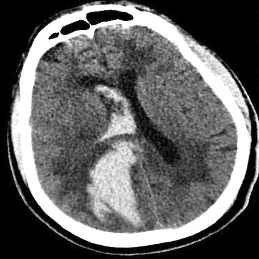
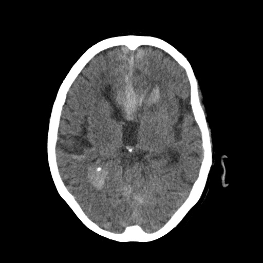

Intracranial Hemorrhage Diagnosis & Emergency Triage AI
Technical Manager and Computer Vision Engineer at APAC Research Group
Role and Mission Overview
Intracranial hemorrhages (ICH) are acute medical emergencies where fast and accurate diagnosis is critical for patient survival. At the APAC Research Group, I directed clinical deep learning pipelines, developing volumetric triage models, 3D hemorrhage quantification, and multi-specialist annotation tools across non-contrast head CT scans.
Automated AI Hemorrhage Triage & CT-as-Video
The Clinical Challenge
In emergency acute triage, radiologists must rapidly review dozens of 3D CT slices per patient. Bleeding lesions occupy less than 2% of total scan volumes, creating severe class imbalance. Isolated 2D slice classification loses inter-slice anatomical continuity, risking missed hematoma margins.
Supervised Sequence Modeling (CT-as-Video)
To replicate how emergency specialists scroll through consecutive CT slices to evaluate bleeding progression, we formulated non-contrast head CT series as continuous spatio-temporal video sequences. Combining convolutional feature backbones with temporal Transformer attention yielded a 98% F1-score on binary hemorrhage triage with zero missed cases across our evaluation cohort.
Multi-Slice Interactive Lesion Segmentation Showcase
Drag the sliders below to compare raw non-contrast CT slices against deep learning lesion segmentation masks across different anatomical depths:

AI Mask Raw CT
AI Mask Raw CTExplainable AI & Representation Learning
Overcoming the Clinical Annotation Bottleneck
Manually segmenting thousands of volumetric CT slices is cost-prohibitive and impractical in clinical workflows. To eliminate reliance on fine-grained pixel annotations and even slice-level classification labels, we researched Self-Supervised Pre-training, Generative AI anatomical priors, and Weakly-Supervised Localization.

Volumetric Representation & Anomaly Priors
Self-supervised 3D representations capture healthy cranial symmetry and tissue density profiles, isolating lesion anomalies without manual contouring.
Core Methodology & Contributions
-
Self-Supervised Foundation Pre-Training: Pre-trained visual encoders directly on unlabeled 3D head CT scans, capturing deep anatomical invariants across axial depth.
-
Generative AI Priors: Modeled healthy parenchyma distribution priors to isolate abnormal hematoma expansions with minimal supervision.
-
Weakly-Supervised Explainability: Derived spatial localization heatmaps directly from patient-level triage flags, providing transparent rationale for medical decision-makers.
Hemorrica 300+ Patient Dataset
Dataset Overview & Hemorrhage Typology
Curated and standardized the Hemorrica benchmark, containing multi-slice non-contrast head CT series from over 300 emergency patients. The benchmark classifies and localizes all 5 primary intracranial hemorrhage subtypes: Intraparenchymal (IPH), Intraventricular (IVH), Subarachnoid (SAH), Subdural (SDH), and Epidural (EDH).
Multi-Planar Anatomy & Class Activation Heatmap
Standard diagnostic planes alongside dataset Grad-CAM activation mapping (Click to enlarge)


{kind=link}
Open-Source Medical Image Annotation Platform
Motivation & Engineering Contribution
Medical AI research often stalls due to the lack of lightweight, web-native annotation tools capable of handling raw DICOM and NIfTI volumes. To address this, we developed and open-sourced a browser-based annotation platform for multi-specialist labeling workflows.
Key Engineering Features
Features dynamic window leveling (Hounsfield Unit presets for brain/bone/subdural windows), multi-slice brush & polygon contouring, multi-specialist consensus review, and instant export to JSON/COCO/NIfTI deep learning pipelines.
Technologies, Publications & Open Source
Publications & Repositories
ICH Classification & Hyperparameter Tuning
Comprehensive Hyperparameter Tuning to Enhance Deep Learning Performance for Intracranial Hemorrhage Classification in Head CT Scans.
Published PaperICH Two-Step DL & Decision Policy
Advanced Classification and Segmentation of ICH in Brain CT Scans via a Two-Step Deep Learning Approach.
Research Publication